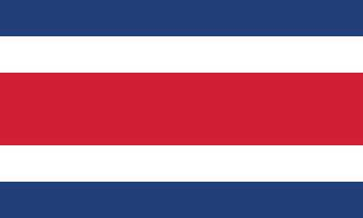

About Me
My name is Diego Vargas. I was born in Costa Rica and now live with my family in the capital city, San Jose. I am currently working as a Project Manager at a tech company but aspire to transition into a career in software development. My number one priority in life is my wife and my sons. I love spending time with my family, watching movies, and playing video games.
San Jose, Costa Rica
Costa Rica, located in Central America, boasts remarkable biodiversity, with around 5% of the planet's species within its borders. Renowned for its commitment to peace, our country abolished its military in 1948, redirecting resources towards education, healthcare, and conservation. Furthermore, Costa Rica leads in sustainability, with almost all its electricity sourced from renewable energy, making it a global leader in eco-friendly initiatives and tourism.